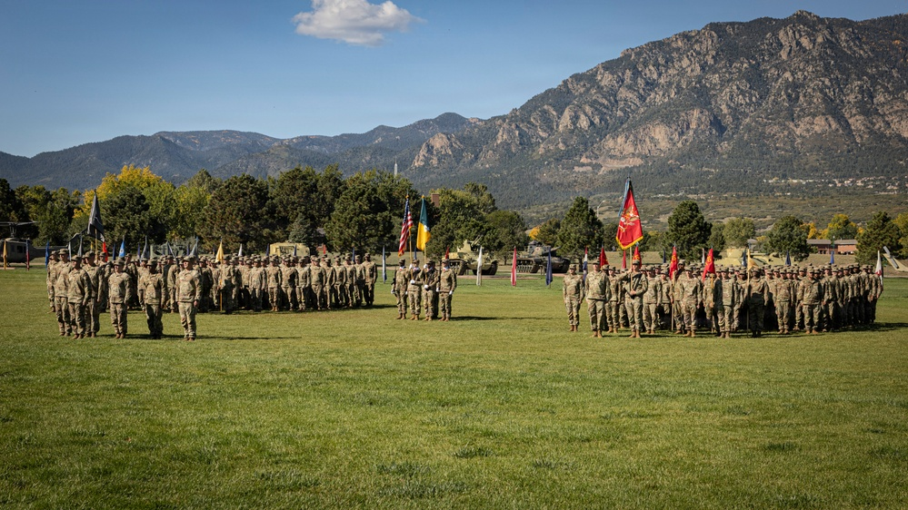

Sgt. William Rogers · DVIDS 10000500 · Public domain · The 4th Multi-Domain Task Force stands in formation during its activation ceremony at Founder's Field, Fort Carson, Colorado. Photo taken Oct. 8, 2026.
DVIDS
The Army activated the 4th Multi-Domain Task Force at Fort Carson
DVIDS reported that the 4th Multi-Domain Task Force was activated in a ceremony at Fort Carson, Colorado, on Oct. 8. Col. Hugh W. A. Jones commands a formation of nearly 2,100 soldiers. The unit follows the 1st Multi-Domain Task Force at Joint Base Lewis-McChord, the 2nd in Germany, and the 3rd in Hawaii. It is built to synchronize long-range precision fires against enemy anti-access networks, with an operational focus on the Indo-Pacific. Jones and the 1st Multi-Domain Task Force report to the 7th Infantry Division, the multi-domain headquarters.
DVIDS · Read source →